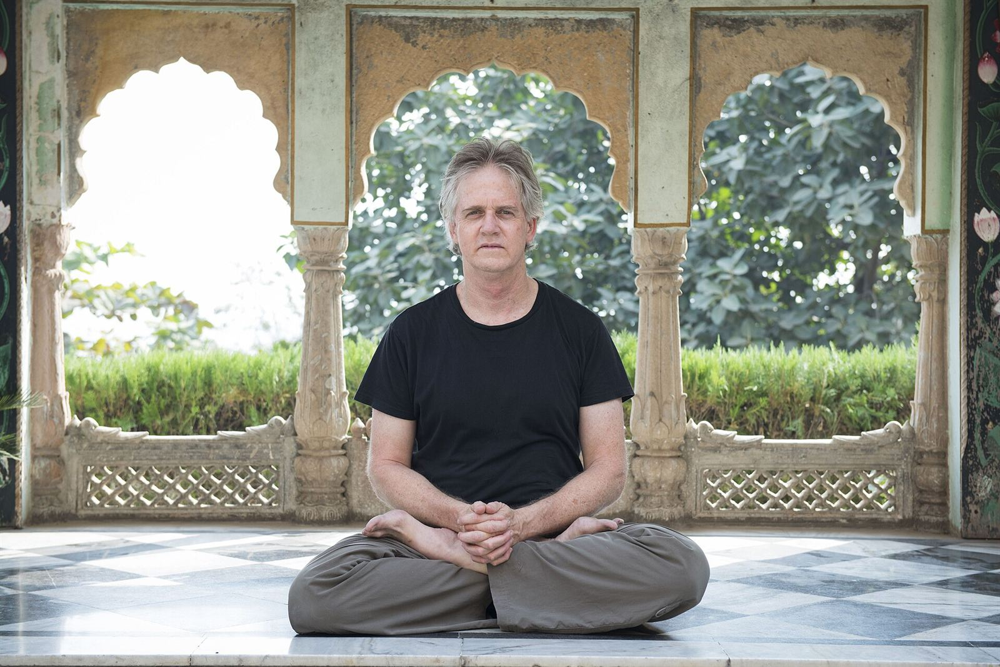

History & philosophy
Where yoga comes from, and what it is for
Yoga took shape in ancient India over more than two thousand years, as a discipline of ethics, breath, concentration and self-understanding. Knowing that story makes every pose on your mat a little richer.

The word
What does “yoga” mean?
The Sanskrit word yoga comes from the root yuj, meaning “to yoke” or “to join.” It suggests harnessing the restless mind the way a charioteer harnesses horses, and also the union of individual awareness with something larger.
Classical yoga was primarily a path of meditation and liberation (moksha). Physical postures became central only much later. Today’s classes, with their flowing sequences and standing poses, are a modern development built on these older foundations.
“Yoga is the stilling of the fluctuations of the mind.”
yogaś citta-vṛtti-nirodhaḥ
Yoga Sutras of Patanjali, 1.2
A timeline
Yoga through the centuries
Dates for ancient texts are approximate, and scholars continue to debate many of them. This timeline follows the broad consensus.
- c. 2500 BCE
Indus Valley seals
Seals from the Indus Valley civilization show figures seated in cross-legged postures. Some see early yoga in them; many scholars consider the link uncertain.
- c. 1500–500 BCE
The Vedas
India’s oldest scriptures describe sacrifice, chanting and ascetic practices. The word yoga appears, though not yet in its later sense of a meditative discipline.
- c. 800–200 BCE
The Upanishads
Philosophical texts explore the self (atman) and ultimate reality (brahman). The Katha Upanishad describes yoga as the steady control of the senses.
- c. 400 BCE–200 CE
The Bhagavad Gita
In this dialogue between the warrior Arjuna and Krishna, yoga becomes a way of life: selfless action (karma), devotion (bhakti) and knowledge (jnana).
- c. 200 BCE–400 CE
Patanjali’s Yoga Sutras
196 concise aphorisms systematize yoga as an eight-limbed path to stilling the mind. It remains the most cited classical text on yoga.
- c. 11th–17th century
Hatha yoga texts
Works such as the 15th-century Hatha Yoga Pradipika of Svatmarama and the later Gheranda Samhita describe postures, breath control, energetic locks and cleansing practices as preparation for meditation.
- 1893
Yoga reaches the West
Swami Vivekananda speaks at the Parliament of the World’s Religions in Chicago and later publishes Raja Yoga (1896), introducing yoga philosophy to Western audiences.
- 1920s–1950s
Modern postural yoga
T. Krishnamacharya teaches in Mysore, developing dynamic, posture-based practice. His students, including B.K.S. Iyengar, K. Pattabhi Jois, Indra Devi and T.K.V. Desikachar, carry it around the world.
- 1960s–1990s
A global practice
Books such as Iyengar’s Light on Yoga (1966), and teachers traveling abroad, bring yoga into homes, gyms and studios worldwide, and new styles emerge.
- 2014–2016
International recognition
The United Nations proclaims June 21 as the International Day of Yoga, first observed in 2015. In 2016, UNESCO inscribes yoga on its list of the Intangible Cultural Heritage of Humanity.
Ashtanga: the eight limbs
Patanjali’s eight-limbed path
The Yoga Sutras describe eight practices that build on each other, moving from how we treat others, to the body and breath, to the inner work of attention.
Yama
RestraintsAhimsa (non-harming), satya (truthfulness), asteya (non-stealing), brahmacharya (moderation of the senses) and aparigraha (non-possessiveness).
Niyama
ObservancesSaucha (cleanliness), santosha (contentment), tapas (disciplined effort), svadhyaya (self-study) and ishvara pranidhana (surrender to the divine).
Asana
PostureThe sutras ask only that posture be sthira sukham, “steady and comfortable” (2.46). The wide repertoire of poses developed later.
Pranayama
Breath regulationDeliberate lengthening and refinement of the breath, which steadies the mind. See our breathing guide.
Pratyahara
Withdrawal of the sensesTurning attention inward, so that sounds, sights and cravings no longer pull the mind outward.
Dharana
ConcentrationBinding attention to a single object, such as the breath, a sound, an image or a sensation.
Dhyana
MeditationWhen concentration becomes an unbroken, effortless flow of attention.
Samadhi
AbsorptionA state of complete absorption in which the sense of separation between observer and observed dissolves.
Four paths
Many roads, one destination
Swami Vivekananda popularized a framework of four main paths of yoga, drawn largely from the Bhagavad Gita and the Yoga Sutras. Most practitioners combine elements of several.

Karma yoga
The path of action: doing one’s duty and serving others without attachment to reward.
Bhakti yoga
The path of devotion: love and surrender expressed through prayer, chanting and ritual.
Jnana yoga
The path of knowledge: study, reflection and inquiry into the true nature of the self.
Raja yoga
The “royal” path of meditation, closely associated with Patanjali’s eight limbs.
Practicing with respect
Honoring yoga’s roots
Yoga is a living tradition with deep roots in Indian philosophy, religion and culture. Practicing respectfully doesn’t require adopting any particular belief. It does mean learning a little about where the practice comes from, pronouncing Sanskrit terms with care, and remembering that postures are one part of a much broader discipline.
Ethical principles such as ahimsa (non-harming) apply on the mat, too: practicing without forcing, without comparing, and with kindness toward your own body is itself a form of yoga.
Glossary
Sanskrit terms you’ll hear in class
- Ahimsa
- Non-harming; the first of the yamas and a guiding principle for practice.
- Asana
- A posture or seat. Pose names end in “-asana,” as in Tadasana (Mountain Pose).
- Bandha
- An energetic “lock,” such as mula bandha at the pelvic floor, used to direct energy and support posture.
- Chakra
- “Wheel.” In yogic and tantric thought, one of several energy centers along the spine.
- Drishti
- A focused gaze point used to steady attention in poses.
- Kriya
- “Action.” A cleansing practice, or a set of exercises in Kundalini yoga.
- Mantra
- A sacred sound, word or phrase repeated in meditation or chanting.
- Mudra
- A symbolic hand gesture, such as touching the thumb and index finger together.
- Nadi
- A channel through which prana is said to flow; there are traditionally said to be thousands.
- Namaste
- A respectful greeting, often translated as “I bow to you,” said with the palms together.
- Om
- A sacred syllable chanted at the start or end of many classes, representing the essence of reality.
- Prana
- Breath or life force; the vital energy that pranayama aims to guide.
- Sankalpa
- A heartfelt intention, often set at the start of a practice or during yoga nidra.
- Shanti
- “Peace.” Often chanted three times at the end of a class.
- Sutra
- “Thread.” A concise aphorism; also a text composed of them, such as the Yoga Sutras.
- Ujjayi
- “Victorious” breath, with a soft ocean-like sound, used in flowing practice.
- Vinyasa
- Linking movement with breath; also the transition sequence between poses.
- Yoga nidra
- “Yogic sleep.” A guided practice of deep relaxation performed lying down.
Bring the philosophy to the mat
Start with steady, comfortable posture, just as Patanjali advised. Our pose library shows you how.